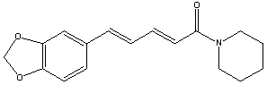

CAS: [94-62-2]
M( C17H19NO3 ) = 285.34 g/mol
mp 130�C
piperine [merck index]
piperin [roempp]
piperine [beilstein/crossfire]
piperinum [kad]
determination of piperine ... by TLC and UV absorption ... [30]
piperine forms a solid complex with 1,3,5-trinitrobenzene in a
ratio 1:1,
in the form of red needles, mp 130�C. [06,
page 235]
IR analysis of piperine in black pepper [20]
further references: piperine
[merck index]
THE MERCK INDEX on CD-ROM / Version 12:3 / 1999
[roempp]
roempp lexikon chemie version 2.0, cd-rom,
stuttgart / new york: georg thieme verlag 1999
[beilstein/crossfire]
http://www.mimas.ac.uk/crossfire/
[pubmed]
http://www.ncbi.nlm.nih.gov/entrez/query.fcgi?db=PubMed
[kad]
king's american dispensatory 1898
m d harvey wickes felter, phr m ph d john uri lloyd
[06]
"natural products - a laboratory guide"
2.edition 1991
raphael ikan; academic press, inc; ISBN 0-12-370551-7
[20]
IR
Analysis of Piperine in Black Pepper
http://www.terrificscience.org/lessonexchange/PACTPDF/PiperineAnalysis.pdf
[30]
chromatogr 1985 338(1): 259-63
"determination of piperine in biological tissues by
thin-layer
chromatography and ultraviolet absorption densitometry."
bg bhat, n chandrasekhara
[pubmed, PMID: 4019654]